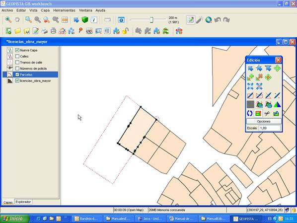

Esta opción estará accesible para todos los usuarios del editor GIS.
Esta herramienta permite escalar las entidades seleccionadas del dibujo. Consta de un único botón dentro del panel de herramientas de edición  , con el siguiente aspecto:
, con el siguiente aspecto:  .
.
Esta opción estará accesible para todos los usuarios del editor GIS.

El usuario escoge una única entidad dentro del editor de GeoPISTA y selecciona la herramienta de escalado de la caja de Edición. Con ayuda del ratón, el usuario ajusta el tamaño definitivo de la entidad. Hay dos modos posibles de realizar el escalado de una entidad:
Para ajustar el tamaño del escalado que se desea obtener hay dos formas posibles:
Para que esta herramienta funcione correctamente el usuario tendrá que seleccionar una única entidad antes de pulsar sobre el botón de la herramienta y además esta entidad deberá encontrarse en una capa editable del mapa. En caso contrario se mostrará un mensaje en la barra de estado del GIS indicando al usuario lo ocurrido.